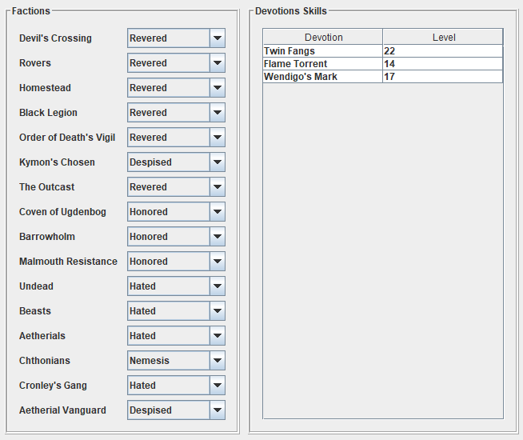

Edit character
GD Stash allows limited changes to the character.
After selecting a character from the drop-down list, its data is displayed. Most of the data should be self-explanatory.
When changing the XP and pressing <return>, the level will get calculated and the available attribute and skill points
will be adjusted accordingly.
When changing the level and pressing <return>, the XP will get calculated (minimum needed for the level) and the available
attribute and skill points will be adjusted accordingly.
The buttons next to the attributes Physique, Cunning and Spirit can be used to increase and decrease the attributes. By using
the buttons, the available Attribute Points as well as Health and Energy are adjusted.
The buttons can only be used as long as the conditions allow for the attribute to be changed (attribute points are available when
increasing, the attribute does not drop below the minimum when decreasing).
All values can also be manually changed, in this case there is no check for consistency.
In addition to the character attributes, the rift gates, shrines, faction reputations and devotion skill levels can be edited.
When changing the faction reputation, do not contradict your quest choices. If e.g. you sided with Kymon's Chosen,
do not set a positive reputation for the Order of Death's Vigil.
Your choice concerning these factions is stored in some quest files which are not changed by the tool, so this would result
in an inconsistent state with unknown consequences in game.

Also, some stats Grim Dawn tracks for achievements are displayed, but cannot be edited.
After the changes have been made, the character needs to be saved.
If 'Reload' is pressed, all unsaved changes to the character are lost. In addition to reloading the currently selected character,
the list of available characters is also refreshed, so any characters that have been created in Grim Dawn in the meantime are now
also available for selection.
The reminder to save changed characters only is shown if the char's inventory has changed, not if its attributes have changed.
To save the changes, you have to press the 'Save' button on this screen, as only then are the changed values passed to the char.